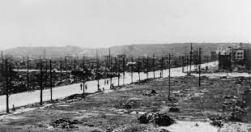
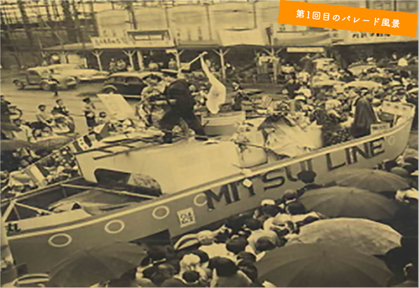
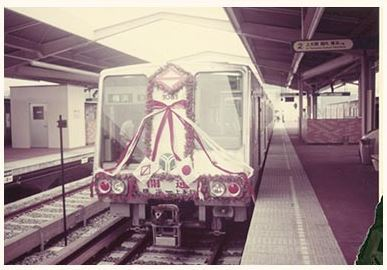
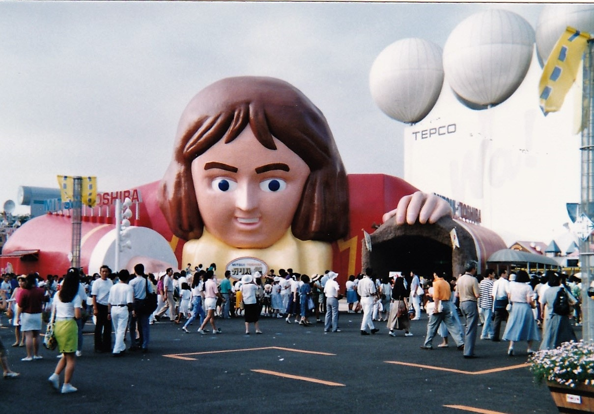
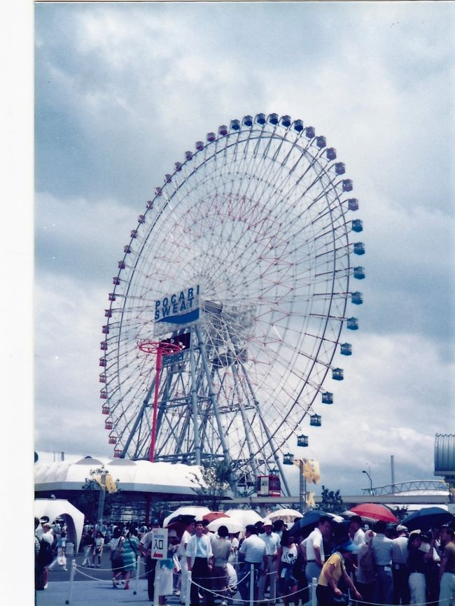
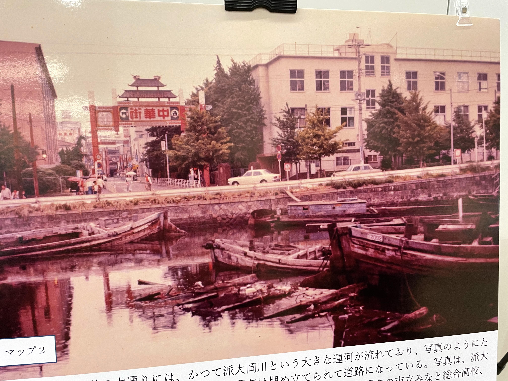
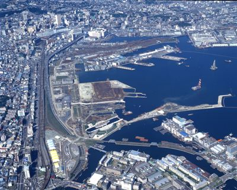

テーマ
「わたしのみた昭和の横浜ー故郷から横浜へ、進学、就職、結婚、育児ー」
インタビュイー
西区在住の高齢者
シルバー世代への問い
- 横浜にはいつから住んでいるのか
- 1945年の横浜大空襲を経験したか
何か耳にしたこと、知っていることがあるか - 1953年の第1回みなと祭には参加したか
初期のみなと祭と現在のみなと祭では規模や雰囲気にどんな違いがあるか - 幼少期の横浜に対する印象
- 横浜に来たきっかけは何か
- 故郷を離れて横浜に来たときの気持ち
- その時の横浜に対する印象
- 故郷の良いといころ、横浜の良いところ
- 1972年に横浜市営地下鉄が開業 初めて地下鉄に乗ったときの気持ち
- 1989年に横浜博覧会が開催 印象的だった展示物はあるか
- 以前の横浜（幼少期もしくは住み始めた当初）と比べて景色はどう変わったか
- 1955年～1973年、高度経済成長期だったが当時の経済状況を象徴する出来事はあるか
- 現在はなくなってしまった思い出の場所やお店はあるか
- （お子さんがいる場合）お子さんは横浜に住んでいるのか
- 横浜中華街に初めて訪れたのは何時か
昔から賑わっていたか - 埋め立てが進む前のみなとみらいの印象
埋め立てが進むことについてどう思ったか - 人生のターニングポイントはいつか
・横浜大空襲

日本経済新聞
・みなと祭第1回 ザよこはまパレード

ザよこはまパレード
・横浜市営地下鉄開業

乗り物ニュース
・横浜博覧会


4travel.jp
・横浜中華街

みなとみらいキャンパス1Fより
・1985年 埋め立て前のみなとみらい

はまれぽ.com
・横浜路面電車